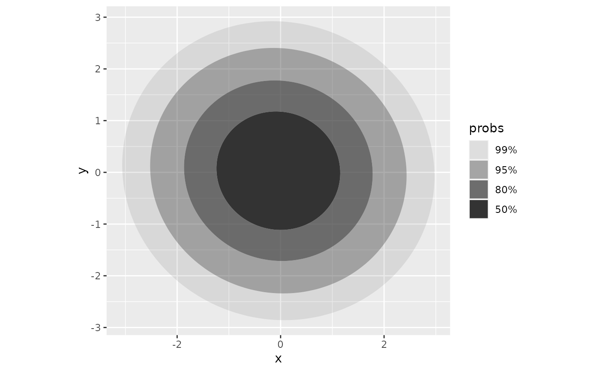
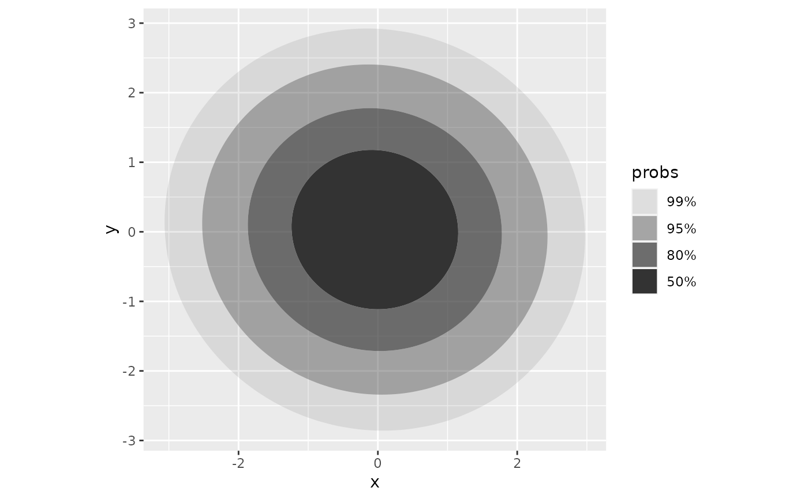
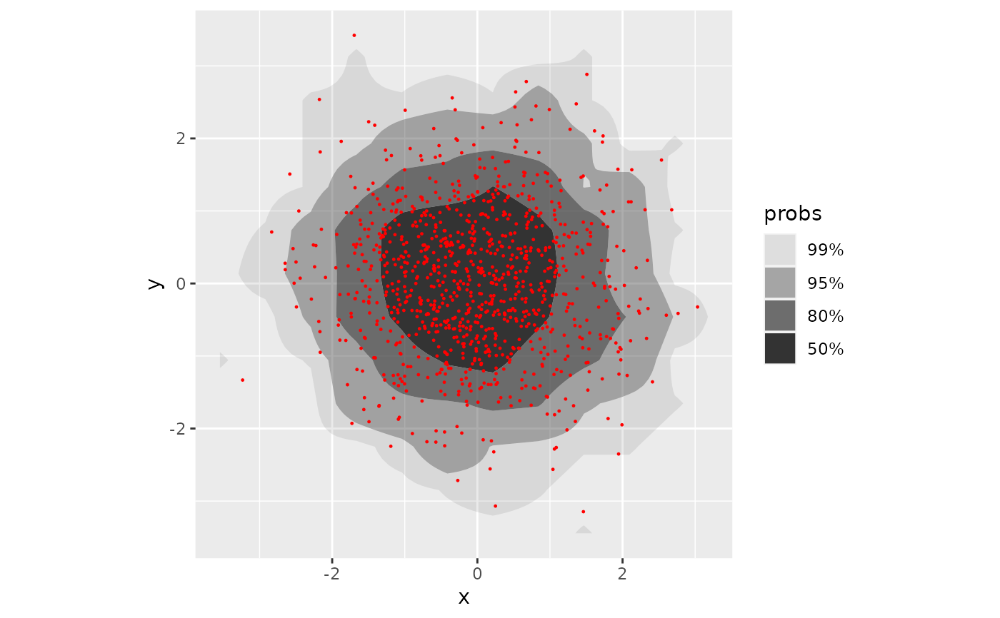
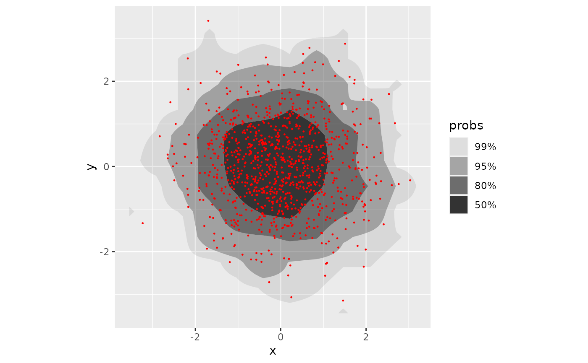
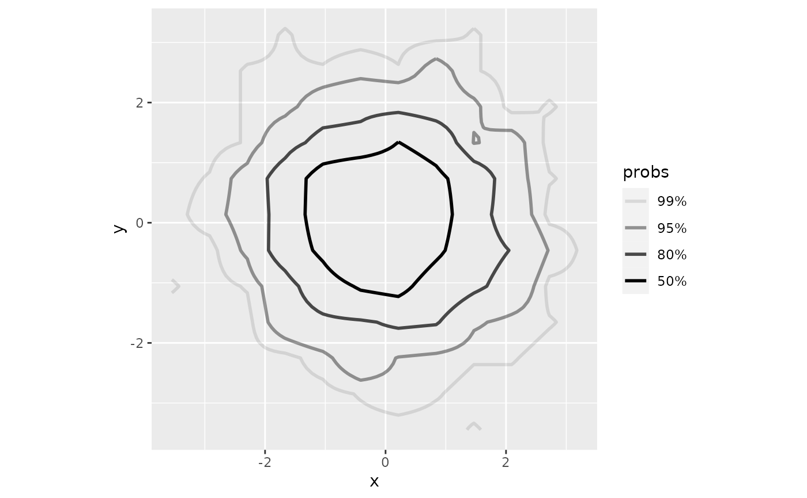
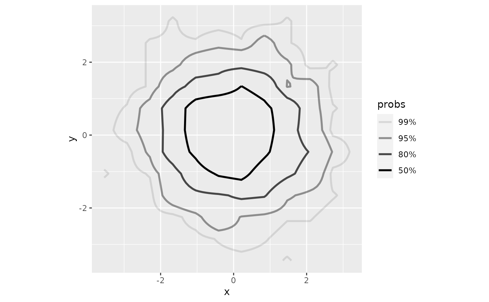

Perform 2D density estimation, compute and plot the resulting highest density regions.
geom_hdr() draws filled regions and geom_hdr_lines() draws lines outlining the regions.
Note, the plotted objects have probabilities mapped to the alpha aesthetic by default.
Usage
stat_hdr(
mapping = NULL,
data = NULL,
geom = "hdr",
position = "identity",
...,
method = "kde",
probs = c(0.99, 0.95, 0.8, 0.5),
n = 100,
xlim = NULL,
ylim = NULL,
na.rm = FALSE,
show.legend = NA,
inherit.aes = TRUE
)
geom_hdr(
mapping = NULL,
data = NULL,
stat = "hdr",
position = "identity",
...,
na.rm = FALSE,
show.legend = NA,
inherit.aes = TRUE
)Arguments
- mapping
Set of aesthetic mappings created by
aes(). If specified andinherit.aes = TRUE(the default), it is combined with the default mapping at the top level of the plot. You must supplymappingif there is no plot mapping.- data
The data to be displayed in this layer. There are three options:
If
NULL, the default, the data is inherited from the plot data as specified in the call toggplot().A
data.frame, or other object, will override the plot data. All objects will be fortified to produce a data frame. Seefortify()for which variables will be created.A
functionwill be called with a single argument, the plot data. The return value must be adata.frame, and will be used as the layer data. Afunctioncan be created from aformula(e.g.~ head(.x, 10)).- geom
The geometric object to use to display the data for this layer. When using a
stat_*()function to construct a layer, thegeomargument can be used to override the default coupling between stats and geoms. Thegeomargument accepts the following:A
Geomggproto subclass, for exampleGeomPoint.A string naming the geom. To give the geom as a string, strip the function name of the
geom_prefix. For example, to usegeom_point(), give the geom as"point".For more information and other ways to specify the geom, see the layer geom documentation.
- position
A position adjustment to use on the data for this layer. This can be used in various ways, including to prevent overplotting and improving the display. The
positionargument accepts the following:The result of calling a position function, such as
position_jitter(). This method allows for passing extra arguments to the position.A string naming the position adjustment. To give the position as a string, strip the function name of the
position_prefix. For example, to useposition_jitter(), give the position as"jitter".For more information and other ways to specify the position, see the layer position documentation.
- ...
Other arguments passed on to
layer()'sparamsargument. These arguments broadly fall into one of 4 categories below. Notably, further arguments to thepositionargument, or aesthetics that are required can not be passed through.... Unknown arguments that are not part of the 4 categories below are ignored.Static aesthetics that are not mapped to a scale, but are at a fixed value and apply to the layer as a whole. For example,
colour = "red"orlinewidth = 3. The geom's documentation has an Aesthetics section that lists the available options. The 'required' aesthetics cannot be passed on to theparams. Please note that while passing unmapped aesthetics as vectors is technically possible, the order and required length is not guaranteed to be parallel to the input data.When constructing a layer using a
stat_*()function, the...argument can be used to pass on parameters to thegeompart of the layer. An example of this isstat_density(geom = "area", outline.type = "both"). The geom's documentation lists which parameters it can accept.Inversely, when constructing a layer using a
geom_*()function, the...argument can be used to pass on parameters to thestatpart of the layer. An example of this isgeom_area(stat = "density", adjust = 0.5). The stat's documentation lists which parameters it can accept.The
key_glyphargument oflayer()may also be passed on through.... This can be one of the functions described as key glyphs, to change the display of the layer in the legend.
- method
Density estimator to use, accepts character vector:
"kde","histogram","freqpoly", or"mvnorm". Alternatively accepts functions which return closures corresponding to density estimates, see?get_hdrorvignette("method", "ggdensity").- probs
Probabilities to compute highest density regions for.
- n
Resolution of grid defined by
xlimandylim. Ignored ifmethod = "histogram"ormethod = "freqpoly".- xlim, ylim
Range to compute and draw regions. If
NULL, defaults to range of data.- na.rm
If
FALSE, the default, missing values are removed with a warning. IfTRUE, missing values are silently removed.- show.legend
logical. Should this layer be included in the legends?
NA, the default, includes if any aesthetics are mapped.FALSEnever includes, andTRUEalways includes. It can also be a named logical vector to finely select the aesthetics to display. To include legend keys for all levels, even when no data exists, useTRUE. IfNA, all levels are shown in legend, but unobserved levels are omitted.- inherit.aes
If
FALSE, overrides the default aesthetics, rather than combining with them. This is most useful for helper functions that define both data and aesthetics and shouldn't inherit behaviour from the default plot specification, e.g.annotation_borders().- stat
The statistical transformation to use on the data for this layer. When using a
geom_*()function to construct a layer, thestatargument can be used to override the default coupling between geoms and stats. Thestatargument accepts the following:A
Statggproto subclass, for exampleStatCount.A string naming the stat. To give the stat as a string, strip the function name of the
stat_prefix. For example, to usestat_count(), give the stat as"count".For more information and other ways to specify the stat, see the layer stat documentation.
Aesthetics
geom_hdr() and geom_hdr_lines() understand the following aesthetics (required
aesthetics are in bold):
x
y
alpha
color
fill (only
geom_hdr)group
linetype
linewidth
subgroup
Computed variables
- probs
The probability associated with the highest density region, specified by
probsargument.
Examples
# Basic simulated data with bivariate normal data and various methods
df <- data.frame(x = rnorm(1000), y = rnorm(1000))
p <- ggplot(df, aes(x, y)) + coord_equal()
p + geom_hdr()
 p + geom_hdr(method = "mvnorm")

p + geom_hdr(method = "freqpoly")
p + geom_hdr(method = "mvnorm")

p + geom_hdr(method = "freqpoly")
 # p + geom_hdr(method = "histogram")
# Adding point layers on top to visually assess region estimates
pts <- geom_point(size = .2, color = "red")
p + geom_hdr() + pts
# p + geom_hdr(method = "histogram")
# Adding point layers on top to visually assess region estimates
pts <- geom_point(size = .2, color = "red")
p + geom_hdr() + pts
 p + geom_hdr(method = "mvnorm") + pts
p + geom_hdr(method = "mvnorm") + pts
 p + geom_hdr(method = "freqpoly") + pts

# p + geom_hdr(method = "histogram") + pts
# Highest density region boundary lines
p + geom_hdr_lines()
p + geom_hdr(method = "freqpoly") + pts

# p + geom_hdr(method = "histogram") + pts
# Highest density region boundary lines
p + geom_hdr_lines()
 p + geom_hdr_lines(method = "mvnorm")
p + geom_hdr_lines(method = "mvnorm")
 p + geom_hdr_lines(method = "freqpoly")

# p + geom_hdr_lines(method = "histogram")
if (FALSE) { # \dontrun{
# 2+ groups - mapping other aesthetics in the geom
rdata <- function(n, n_groups = 3, radius = 3) {
list_of_dfs <- lapply(0:(n_groups-1), function(k) {
mu <- c(cos(2*k*pi/n_groups), sin(2*k*pi/n_groups))
m <- MASS::mvrnorm(n, radius*mu, diag(2))
structure(data.frame(m, as.character(k)), names = c("x", "y", "c"))
})
do.call("rbind", list_of_dfs)
}
dfc <- rdata(1000, n_groups = 5)
pf <- ggplot(dfc, aes(x, y, fill = c)) + coord_equal()
pf + geom_hdr()
pf + geom_hdr(method = "mvnorm")
pf + geom_hdr(method = "mvnorm", probs = .90, alpha = .5)
pf + geom_hdr(method = "histogram")
pf + geom_hdr(method = "freqpoly")
pc <- ggplot(dfc, aes(x, y, color = c)) +
coord_equal() +
theme_minimal() +
theme(panel.grid.minor = element_blank())
pc + geom_hdr_lines()
pc + geom_hdr_lines(method = "mvnorm")
# Data with boundaries
ggplot(df, aes(x^2)) + geom_histogram(bins = 30)
ggplot(df, aes(x^2)) + geom_histogram(bins = 30, boundary = 0)
ggplot(df, aes(x^2, y^2)) + geom_hdr(method = "histogram")
} # }
p + geom_hdr_lines(method = "freqpoly")

# p + geom_hdr_lines(method = "histogram")
if (FALSE) { # \dontrun{
# 2+ groups - mapping other aesthetics in the geom
rdata <- function(n, n_groups = 3, radius = 3) {
list_of_dfs <- lapply(0:(n_groups-1), function(k) {
mu <- c(cos(2*k*pi/n_groups), sin(2*k*pi/n_groups))
m <- MASS::mvrnorm(n, radius*mu, diag(2))
structure(data.frame(m, as.character(k)), names = c("x", "y", "c"))
})
do.call("rbind", list_of_dfs)
}
dfc <- rdata(1000, n_groups = 5)
pf <- ggplot(dfc, aes(x, y, fill = c)) + coord_equal()
pf + geom_hdr()
pf + geom_hdr(method = "mvnorm")
pf + geom_hdr(method = "mvnorm", probs = .90, alpha = .5)
pf + geom_hdr(method = "histogram")
pf + geom_hdr(method = "freqpoly")
pc <- ggplot(dfc, aes(x, y, color = c)) +
coord_equal() +
theme_minimal() +
theme(panel.grid.minor = element_blank())
pc + geom_hdr_lines()
pc + geom_hdr_lines(method = "mvnorm")
# Data with boundaries
ggplot(df, aes(x^2)) + geom_histogram(bins = 30)
ggplot(df, aes(x^2)) + geom_histogram(bins = 30, boundary = 0)
ggplot(df, aes(x^2, y^2)) + geom_hdr(method = "histogram")
} # }